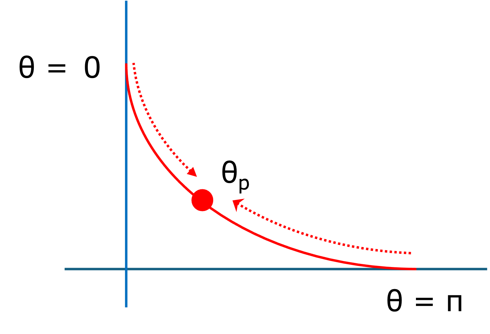

最速降下曲線-06 - 最終的に水平になる場合
では，最終的に水平になる場合，θL= π，曲線に沿って，どの程度の距離を移動するのでしょうか？
弧長

曲線の上のある一点のθを，θp，とします．
曲線上の微小距離 dsは，
$$
{ \Large \displaystyle
\begin{equation}
\begin{split}
x &= a ( \theta - sin \ \theta)\\
dx &= a ( 1 - cos \ \theta) \ d \ \theta\\
y &= a (1 - cos \ \theta) \\
dy &= a \ sin \ \theta \ d \ \theta\\
ds^2 &= dx^2 + dy^2 = a^2 [( 1 - cos \ \theta)^2 + sin^2 \ \theta] \ d \ \theta^2\\
&= a^2[1 - 2 \ cos \ \theta + cos^2 \ \theta + sin^2 \ \theta] \ d \ \theta^2\\
&= 2a^2 [1 - cos \ \theta] \ d \ \theta^2\\
ds &= a \sqrt{2(1 - cos \ \theta)} \ d \ \theta\\
&= a \sqrt{2 \cdot 2 sin^2 \ \frac{\theta}{2}} \ d \ \theta\\
&= 2a \ sin \ \frac{\theta}{2} \ d \ \theta\\
\end{split}
\end{equation}
}
$$
となります．最下点からの距離は，
$$
{ \Large \displaystyle
\begin{equation}
\begin{split}
L_{\pi \ to \ \theta_p} &= \int_{\pi}^{\theta_p} 2a \ sin \ \frac{\theta}{2} \ d \ \theta\\
&= -2a \left[ 2 \ cos \frac{\theta}{2} \right]_{ \pi}^{ \theta_p} \\
&= -2a \left[ 2 \ cos \frac{\theta_p}{2} - 2 \ cos \frac{\pi}{2}\right]\\
&= -4a \ cos \frac{\theta_p}{2} \\
&= 4a \ cos \frac{\theta_p}{2}
\end{split}
\end{equation}
}
$$
最後の展開でマイナスからプラスになったのは，右から左の積分なので実際はプラスとなります．
開始点からの距離は，
$$
{ \Large \displaystyle
\begin{equation}
\begin{split}
L_{0 \ to \ \theta_p} &= \int_0^{\theta_p} 2a \ sin \ \frac{\theta}{2} \ d \ \theta\\
&= -2a \left[ 2 \ cos \frac{\theta}{2} \right]_{ 0}^{ \theta_p} \\
&= -2a \left[ 2 \ cos \frac{\theta_p}{2} - 2 \ cos \frac{0}{2}\right]\\
&= -4a \ cos \frac{\theta_p}{2} +4a
\end{split}
\end{equation}
}
$$
全体の距離は，
$$
{ \Large \displaystyle
\begin{equation}
\begin{split}
L_{start \ to \ end} &= \int_0^{\pi} 2a \ sin \ \frac{\theta}{2} \ d \ \theta\\
&= -2a \left[ 2 \ cos \frac{\theta}{2} \right]_{ 0}^{ \pi} \\
&= -2a \left[ 2 \ cos \frac{\pi}{2} - 2 \ cos \frac{0}{2}\right]\\
&= 4a
\end{split}
\end{equation}
}
$$
となります．
次ページは，最終的に水平ではない場合，を考えていきましょう